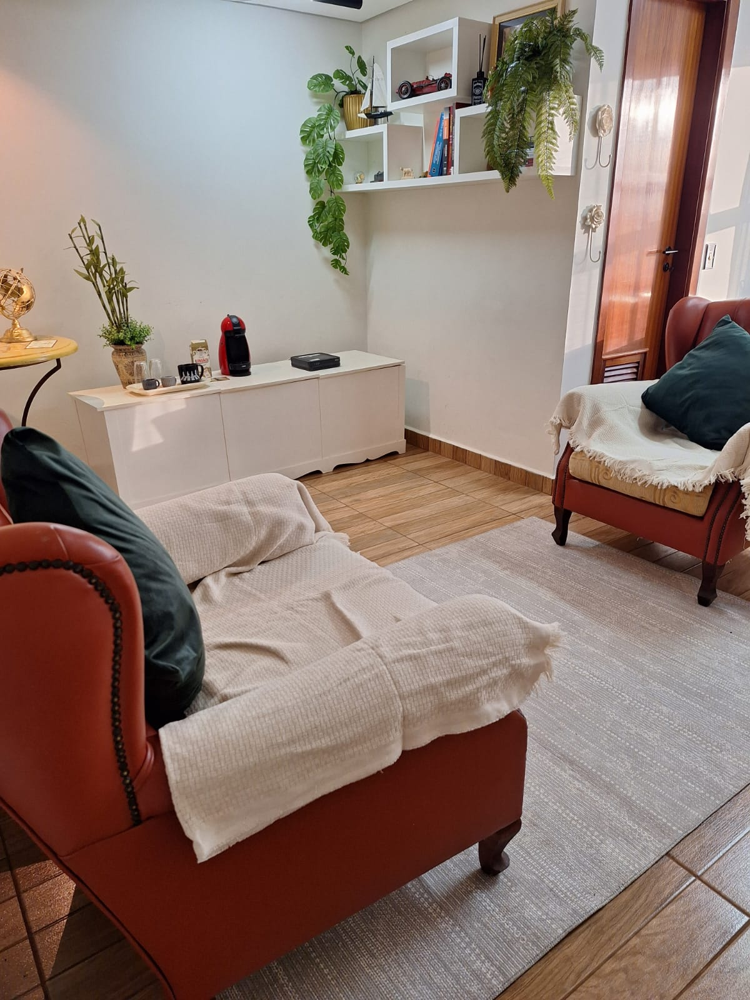

Meu nome é Luís Guilherme Henrique Faria de Vergueiro, CRP 06/163481. Sou psicólogo clínico em Ribeirão Preto – SP, especialista em Psicologia Jurídica e em Clínica Analítico-Comportamental. Atendo adolescentes e adultos em atendimentos presenciais e online.
"O autoconhecimento é o primeiro e mais importante passo para viver uma vida mais equilibrada."
Durante a minha infância, fui uma criança bastante tímida, distraída e inquieta no ambiente escolar. Essas características
trouxeram desafios importantes no processo de aprendizagem, especialmente na matemática. Diante dessas dificuldades, iniciei psicoterapia ainda muito cedo.
Esse processo foi fundamental para o meu desenvolvimento pessoal, emocional e acadêmico.
A experiência transformadora que vivi na psicoterapia despertou em mim o desejo de compreender mais profundamente o funcionamento humano e de oferecer a outras
pessoas o mesmo suporte que recebi. Foi assim que escolhi me tornar psicólogo.
Acredito que a psicoterapia é um espaço de acolhimento, reflexão e transformação. Ela pode contribuir para o desenvolvimento do autoconhecimento, auxiliar na
de padrões comportamentais que, por vezes, não estão alinhados aos seus valores, e favorecer mudanças mais conscientes e saudáveis.
Se você busca compreender melhor a si mesmo(a) e construir caminhos mais coerentes com aquilo que deseja para sua vida, a psicoterapia pode ser um importante
recurso nesse processo.

O psicólogo clínico trabalha com escuta qualificada e técnicas fundamentadas em abordagens teóricas reconhecidas, oferecendo um espaço seguro e ético para que o paciente possa compreender seus conflitos, desenvolver autoconhecimento e construir formas mais saudáveis de lidar com suas dificuldades.
A Psicologia Analítico comportamental é uma abordagem da psicologia fundamentada na Análise do Comportamento. Ela parte do princípio de que nossos comportamentos, inclusive aquilo que sentimos e pensamos, são influenciados pela nossa história de vida e pelas situações que vivenciamos no dia a dia. Em vez de olhar apenas para os sintomas, essa abordagem busca compreender a função dos comportamentos: por que eles acontecem, em quais contextos aparecem e o que faz com que continuem ocorrendo. Muitas vezes, um comportamento que hoje traz sofrimento pode ter sido, em algum momento, uma forma de lidar com dificuldades. A terapia ajuda a identificar esses padrões e a construir novas maneiras de agir mais alinhadas com aquilo que a pessoa valoriza para sua vida. O processo terapêutico é colaborativo, respeitoso e baseado em evidências científicas. Ao longo dos atendimentos, o objetivo é ampliar o autoconhecimento, fortalecer habilidades emocionais e comportamentais e desenvolver repertórios mais saudáveis e eficazes para lidar com desafios, relações e escolhas.
A Psicologia Jurídica é a área da Psicologia que atua em interface com o Direito. Seu objetivo é contribuir, de forma técnica e ética, com questões que envolvem processos judiciais e demandas legais. O psicólogo jurídico pode atuar em situações como disputas de guarda, regulamentação de convivência, processos de adoção, avaliação de vínculos familiares, violência doméstica, entre outras questões que chegam ao sistema de Justiça. Seu trabalho envolve a realização de avaliações psicológicas, elaboração de documentos técnicos e, em alguns contextos, acompanhamento psicológico relacionado a demandas judiciais.
É o psicólogo contratado por uma das partes envolvidas em um processo judicial para acompanhar e analisar tecnicamente uma perícia psicológica. Sua função não é substituir o perito nomeado pelo juiz, mas oferecer um olhar técnico especializado em defesa dos interesses da parte que o contratou. O assistente técnico pode analisar documentos, participar de entrevistas e procedimentos periciais (mediante autorização) elaborar quesitos, emitir parecer técnico e apontar possíveis inconsistências ou aspectos relevantes do laudo pericial.
Iniciar a psicoterapia é um ato de coragem e autocuidado. Ao começar agora, você dá o primeiro passo para entender seus padrões e melhorar sua autoestima.
Iniciar agora"O Dr. Luís foi fundamental para eu entender minha ansiedade. Hoje consigo lidar com o trabalho de forma muito mais leve."
"Ambiente acolhedor e profissional. Me senti ouvido de verdade desde a primeira sessão."
"A terapia online funciona perfeitamente para minha rotina. Recomendo muito!"
A Análise do Comportamento é uma abordagem da Psicologia que estuda como os comportamentos são aprendidos e mantidos a partir da interação do indivíduo com o ambiente.
Na psicoterapia, você pode esperar um espaço seguro e acolhedor para compreender seus pensamentos, emoções e comportamentos, desenvolver autoconhecimento e construir estratégias práticas para lidar melhor com suas dificuldades e melhorar sua qualidade de vida.
Entre em contato pelo meu WhatsApp ou Instagram
Cada sessão tem duração aproximada de 50 minutos a uma hora.
Ofereço ambas as modalidades para melhor atender suas necessidades.
Um ambiente acolhedor no coração de Ribeirão Preto
Rua Bernardino de Campos, 1001
Centro, Ribeirão Preto - SP
Segunda a Sexta: 08h às 11h e das 13h às 18h
Atendimentos Presencial e Online